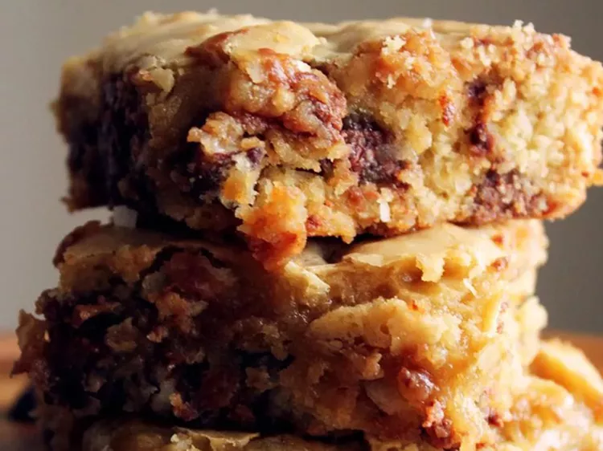

Brownies

Descripiton
These are my grandmas homemade coconut brownie bars. Absolutly delicious and so easy to make!
Ingredients
- 18 graham crackers (or 9 doubles), crushed into fine crumbs
- 1 (14-ounce) can sweetened condensed milk
- 1 (6-ounce) package chocolate "bits" (or chips)
- 1/2 cup chopped nuts
Directions
- Combine all ingrediants in mixing bowl until fully coated.
- Grease and line a 9 inch square baking dish.
- Add the mixture and use a spatula to ensure it's even inside the pan
- Bake in 350 F oven for 30-40 min checking when you can smell them in the oven
- Cut into small squares, Serve and enjoy!
Home